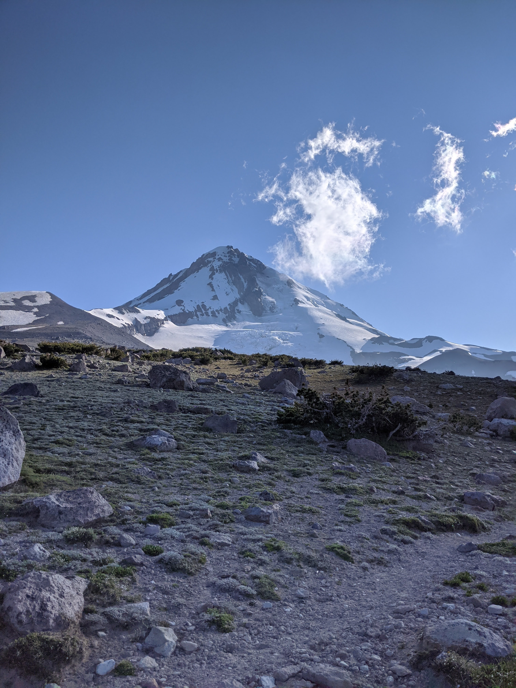

About me
My professional self:
- I am quite fond of data science and I am advancing my skills as a data scientist including machine learning and statistical inference.
- I use R for all of my work, and in consequence I am always interested in learning new tools and libraries.
- I am beginning to utilize big data tools such as spark, and google cloud compute.
- I love making intriguing data visualizations, I consider it a form of .
My non-professional self:
- I love to enjoy the outdoors and explore new places! Some of my favorite activities include: , , and .
- Im a big lover, and I hope to keep attending concerts once the pandemic recedes.
- I am also into , albeit a phone using amateur. Here are some of my favorite shots I have taken:
